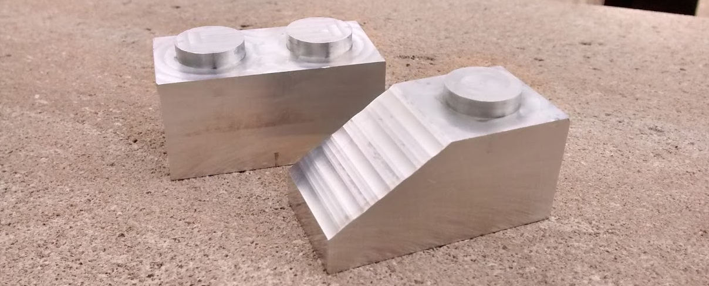

CNC Blocks
An individual project to practice using the CNC machine by making aluminum Lego-inspired blocks.

Design
I used NX/Unigraphics to create the models and CNC g-code to produce 2 blocks: one 2x1 brick and one 2x1 slope block. The CNC g-code was designed to need 4 setups, two on each block (top and bottom).
Programming
Surface milling, cavity milling, and others were the main cutting operations used in the program. The process was designed to need only 3 tools: one ball mill and 2 end mills (one for roughing and one for finishing). Details of the program design can be found in the report here.
planar mill operation on top of 2x1 brick
cavity mill operation on top of 2x1 slope
finished part compared to stock size
Machining
I started the machining process by preparing the aluminum stock to the right size with a flycutter. Then, I loaded the stock into a Haas CNC machine and executed the programs.
preparing stock using flycutter
loading the stock into the CNC machine
slope block after CNC operation